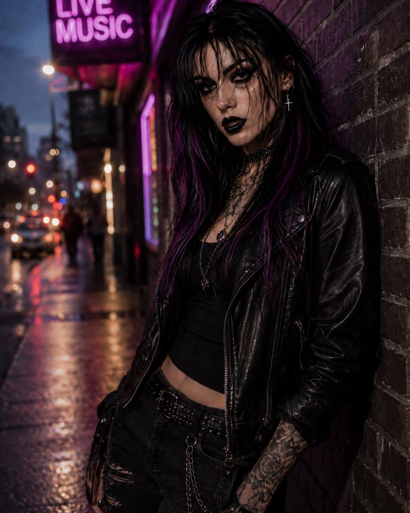

“LOCKED OUT” / FEATURED SONG / LYRICS
KURCED
Songs written by Joseph Calitoy (Calitoy). Music and vocals are AI-generated. Prepare to feel it all too loudly.
EXPLORE THE MUSIC →BEAUTIFUL.
UNSTABLE.
UNAPOLOGETIC.
PISCES.
01 / THE CURSE
BUILT ON
BAD HABITS
AND BIG FEELINGS.
KURCED makes dark pop for the 3 a.m. version of you—the one that feels everything too loudly and never sends the safe text. A Pisces with a matchbook, she turns intuition, longing, and beautiful chaos into songs.
Pretty melodies. Ruined mascara. No apologies.

02 / FEATURED SONG
OUTKURCED / FEATURED SONG / LYRICS
FEATURED SONG
LOCKED
OUT.
A song about standing outside the place that was supposed to feel like home. Read the lyrics below and explore more music from Calitoy.
EXPLORE CALITOY ON SOUNDCLOUD ↗“LOCKED OUT” LYRICS →“ALL-AMERICAN BOYS” LYRICS →“OVERDOSE” LYRICS →FOLLOW THE MUSIC →INSTAGRAM ↗03 / LISTEN
ELEVEN SONGS.
ONE DEBUT ERA.
Explore the Kurced song catalog and available lyrics. Songs written by Joseph Calitoy (Calitoy), with AI-generated music and vocals.
EXPLORE CALITOY ON SOUNDCLOUD ↗
04 / STAY CURSED
FOLLOW THE
MUSIC.
Follow Calitoy on SoundCloud for music and updates. Album release details will be shared here when confirmed.
FOLLOW CALITOY ON SOUNDCLOUD ↗